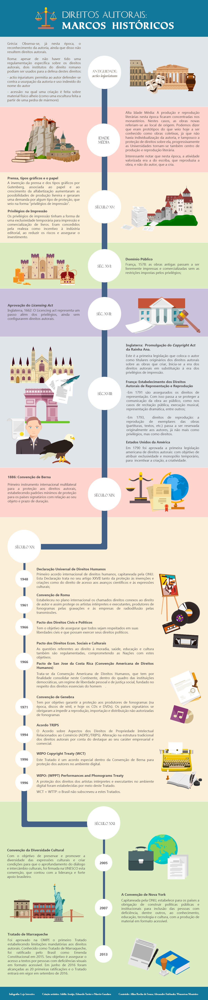
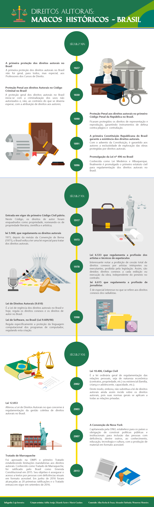

Aula 2
História
Agora que já conhece a diferença entre Direitos Autorais e Propriedade Intelectual, é importante que entenda algumas questões relacionadas a história dos Direitos Autorais.
Introdução
Vídeo 1 - Marcos Históricos dos Direitos Autorais
Fonte: FIOCRUZ Campus Virtual.
Marcos históricos Internacionais
( Clique na imagem para ampliá-la.)
Marcos históricos Nacionais
( Clique na imagem para ampliá-la.)
História dos direitos autorais
Conheça um pouco mais sobre os marcos históricos dos direitos autorais navegando pela linha do tempo abaixo.